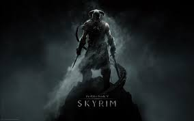

개드립을 알려드립니다
도오오오바킨
히오오오오스
로오드 타찬카
투명드래곤
도오오오바킨

그들의 언어로는 도바킨...
용의 일족이지!
Fus ro da!
스카이림의 주인공, 용의 일족이지만 잡혀 죽을 뻔 했으나
갑자기 나타난 알두인(드래곤)이 나타나 도망칠 수 있게 된다.
그리고 용언을 배운 후 알두인을 잡았다는...
(알두인이 구해줬는ㄷ..........읍읍)
가장 유명한 용언은 역시
푸스 로 다!
이 용언은 사용시 엄청난 함성으로 적을 날려보림
덕분에 트롤러들이 npc를 괴롭히는데도 사용함.......